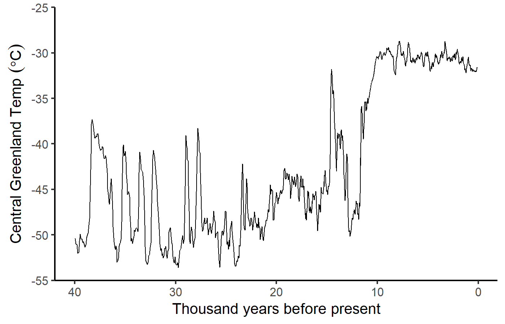
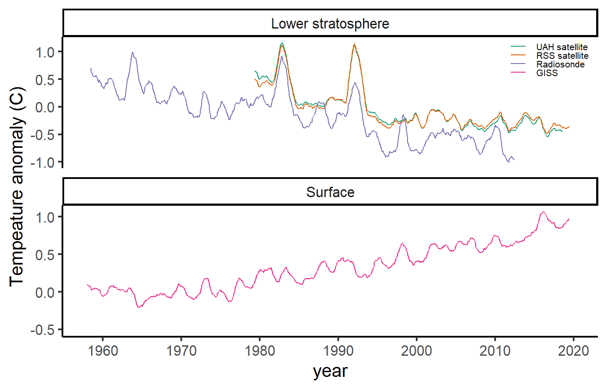

Review of Past Climates
EES 3310/5310
Global Climate Change
Jonathan Gilligan
Class #15: Monday, February 10 2020
Summary of Oxygen Isotopes
- Two different uses:
-
\(\delta \ce{^{18}O}\) in glacial ice tells us about air temperature:
- Greater (less negative) \(\delta \ce{^{18}O}\) means warmer temperature.
-
\(\delta \ce{^{18}O}\) in sea-floor sediments (skeletons of deep-sea organisms) tells us about sea level:
- Greater (more positive) \(\delta \ce{^{18}O}\) means lower sea-level.
-
\(\delta \ce{^{18}O}\) in glacial ice tells us about air temperature:
- During ice-age cycles:
-
cold temperatures go with low sea-level
- \(\delta \ce{^{18}O}\) is lower than usual in glaciers, higher in sea-floor sediments.
-
warm temperatures go with high sea-level:
- \(\delta \ce{^{18}O}\) is higher than usual in glaciers, lower in sea-floor sediments.
-
cold temperatures go with low sea-level
Abrupt Climate Change
Abrupt Climate Change

Abrupt Climate Change

Cold Pool in North Atlantic

Warming Trend: 1900–2013
Climate in the
Last Millennium
Walker River


Relict Tree Stumps

Relict Tree Stumps

Lake Tanaya, Yosemite

Chaco Canyon

Reconstructing Megadroughts


Dust Bowl vs. Megadroughts
-
1930s “Dust Bowl”
- 6 years
- 25% reduction in rainfall in plains states
- Hundreds of thousands of refugees
-
Medieval Megadroughts:
- Multiple droughts
- 60 years or longer (up to 240)
- 40% reduction of rainfall in plains states
Questions about Carbon Cycle?
Questions about MODTRAN?
MODTRAN:
- MODTRAN calculates emissions and absorption of longwave light in the atmosphere.
- Things that don’t change during a run:
- Heat from the sun
- Set by “locality” of the atmosphere
- Temperature of the ground and every layer of the atmosphere.
-
Set by “locality” of the atmosphere and “temperature offset”
Locale Iout (W/m2) Tground (K) U.S. Standard Atmosphere 267.98 288.2 Tropical 298.67 299.7 Midlatitude winter 235.34 272.2
-
- Heat from the sun
- For every wavenumber, MODTRAN calculates heat emission and absorption up and down at each layer.
MODTRAN:
- Emissivity (\(\varepsilon\)) = absorption
- Fraction absorbed by layer \(= \varepsilon\)
- Radiation emitted by layer \(= \varepsilon \sigma T^4\)
- \(\varepsilon\) small (near zero):
- Little absorption or emission.
- \(\varepsilon\) large (near one):
- Almost all incoming radiation is absorbed
- Emission close to black body at temperature T.
- \(\varepsilon\) is large for wavenumbers where greenhouse gases absorb strongly.
- Greater concentration \(\rightarrow\) larger \(\varepsilon\)
- \(\varepsilon\) is small where there is little absorption
- Atmospheric window
- Looking down from space:
- You see emission at the temperature of the highest layer with large \(\varepsilon\).
- In atmospheric window, that layer is near the ground
- With clouds, it’s the top of the highest cloud
- Looking up from ground:
- You see emission at the temperature of the lowest layer with large \(\varepsilon\).
- In atmospheric window, there’s no such layer, so you see very little emission
- With clouds, it’s the bottom of the lowest cloud
Evidence for Cause of Global Warming
Fingerprint Analysis
- Different causes of warming produce different patterns:
- Different places warm differently
- Polar regions vs. tropics
- Troposphere vs. stratosphere
- Different times warm differently
- Night vs. day
- Winter vs. summer
- Different places warm differently
- Observed patterns:
- Match predicted patterns for greenhouse effect
- Do not match predicted patterns for any other theory
Stratosphere vs. Troposphere:

Day vs. Night